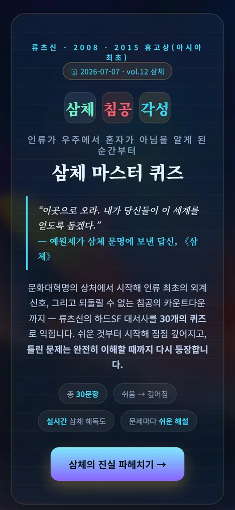
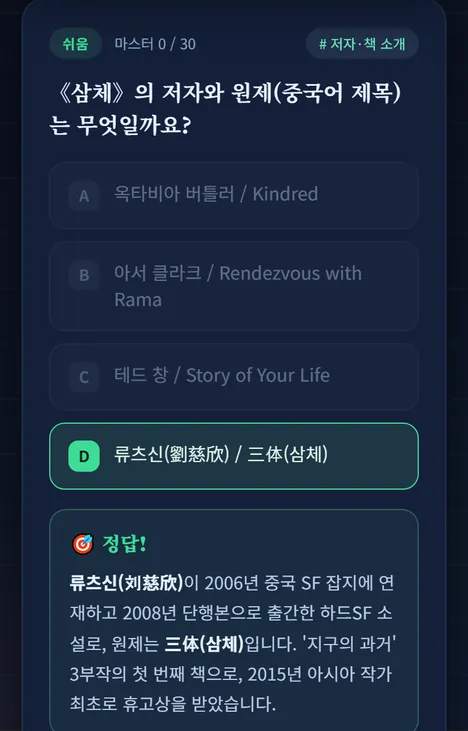
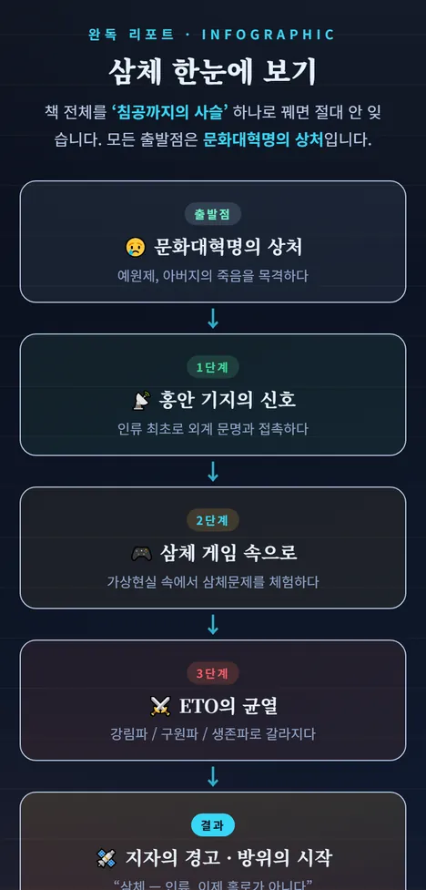
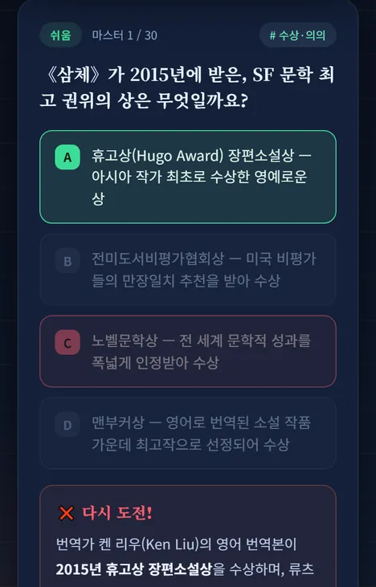
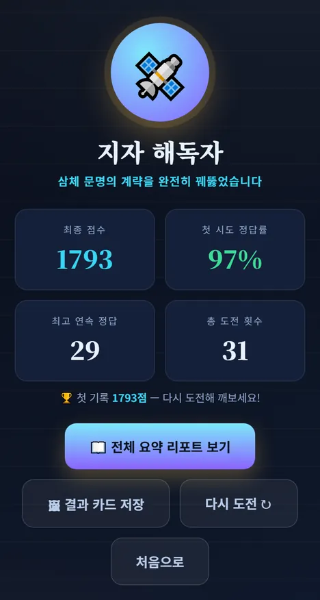
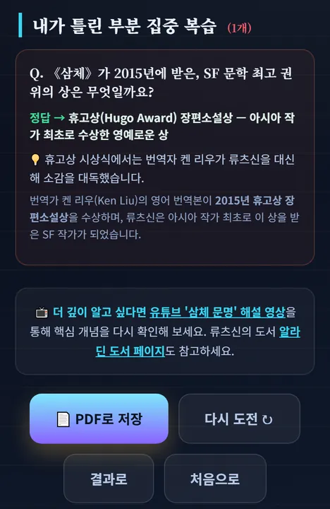

밤의 서재 · 사용 설명서
밤이 오면,
서재가 열립니다.
하루 10분, 퀴즈로 한 권을 완독합니다. 매일 밤 새 책이 꽂힙니다.
📖 매일 새 책 한 권
🔁 도파민 반복 퀴즈
📜 완독 리포트
어떻게 읽히나요
세 걸음이면
한 권이 끝납니다.
읽고 → 풀고 → 한 장으로 남기기. 실제 화면입니다.
1
오늘의 책 펼치기
책 소개와 핵심 키워드를 1분 안에 훑습니다.

2
30문항, 쉬운 것부터 깊어지게
답을 누르면 바로 정답과 쉬운 해설. 틀린 문제는 다시 나옵니다.

3
완독 리포트 받기
책 전체를 한눈에, 내가 틀린 부분만 모아 복습. PDF로 저장.

책 이해가 깊어지는 이유
답을 누르는 순간,
이해가 남습니다.
읽기만 하면 흘러가지만, 문제로 꺼내 보면 머리에 새겨집니다.
- 즉시 해설 — 정답이든 오답이든 «왜»를 바로 읽습니다.
- 쉬운 것부터 깊어지게 — 30문항이 책의 뼈대 순서로 쌓입니다.
- 틀린 것만 반복 — 아는 건 넘기고, 모르는 것만 다시 만납니다.
🎯 정답!
✕ 다시 도전!

틀린 문제는 완전히 이해할 때까지
다시 나옵니다
다시 나옵니다
도파민 장치
풀 때마다 터지고,
끝나면 등급이 뜹니다.
공부 같지 않게 만드는 네 가지 장치 — 그리고 결과 카드.
+점수정답마다 점수, 첫 시도 정답률 따로 집계
연속 정답콤보가 이어질수록 멈추기 어렵습니다
해독도 %게이지가 차오르고 챕터 마일스톤이 켜집니다
등급완독하면 책마다 다른 칭호 — 색종이와 함께
🏆 완독 결과

등급 · 점수 · 연속 정답
결과 카드로 바로 자랑
결과 카드로 바로 자랑
완독 리포트
한 권이
한 장으로 남습니다.
다 풀면 자동으로 만들어집니다. 책 전체 사슬과 내가 틀린 부분만 골라서.
- 책 전체 흐름을 «사슬» 하나로 — 출발점에서 결말까지
- 핵심 개념 8개 · 목차별 요약 · 생각해 볼 질문
- 내가 틀린 부분만 모아 «집중 복습»
- PDF로 저장 — 다음 책 읽기 전에 한 번 더
📜 한눈에 보기
🔁 틀린 부분 복습

시작할 준비 끝
매일 밤,
새 책이 꽂힙니다.
오늘 한 권을 끝내면 결과 카드가 남습니다. 내일 밤엔 새 책.
99권이 서가에
삼체 · 데미안 · 1984 · 노인과 바다 · 넛지 · 돈의 심리학 …
오늘 밤엔 어느 책부터?
⏱ 10분🎯 30문항📜 리포트 1장